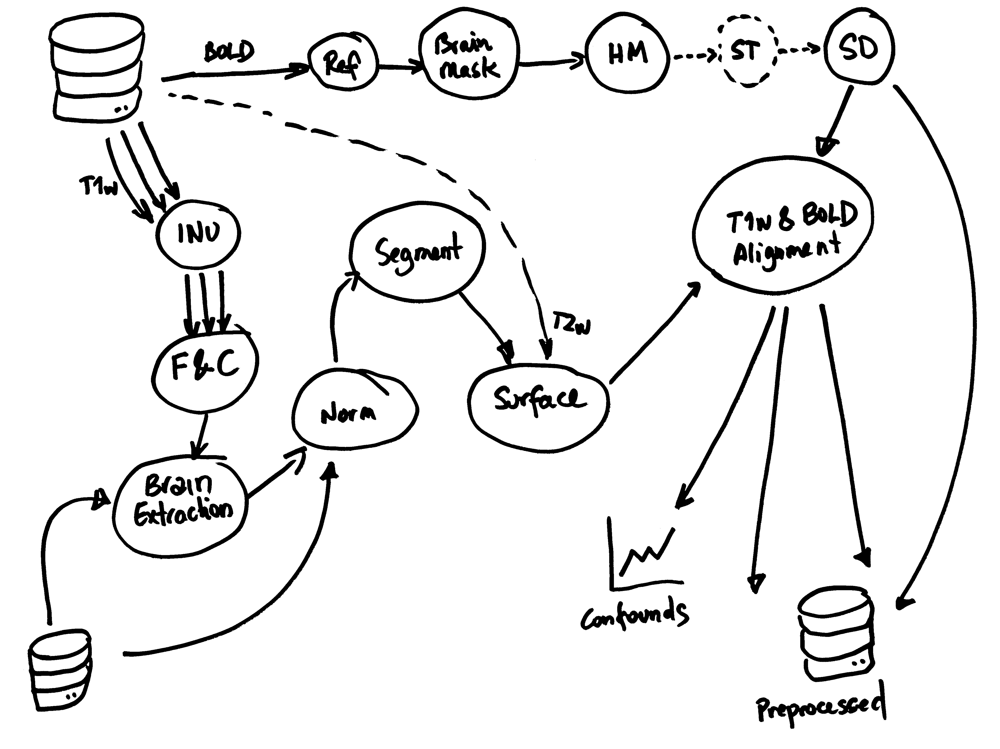
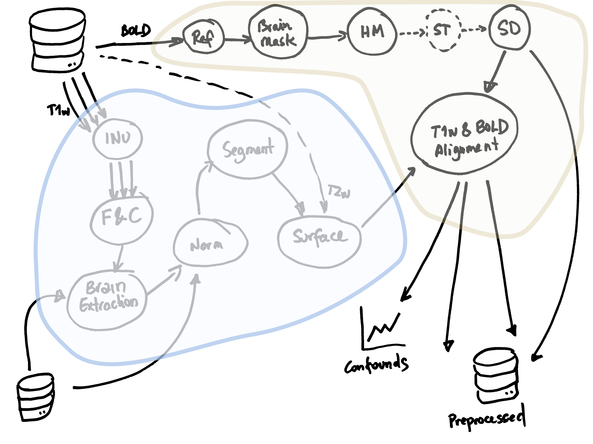
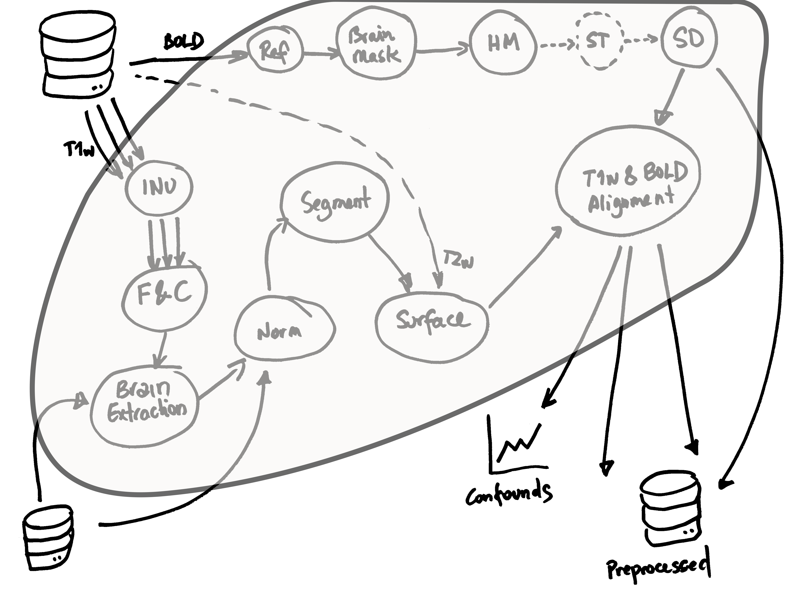
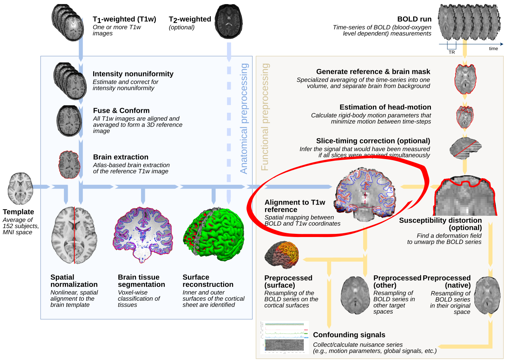
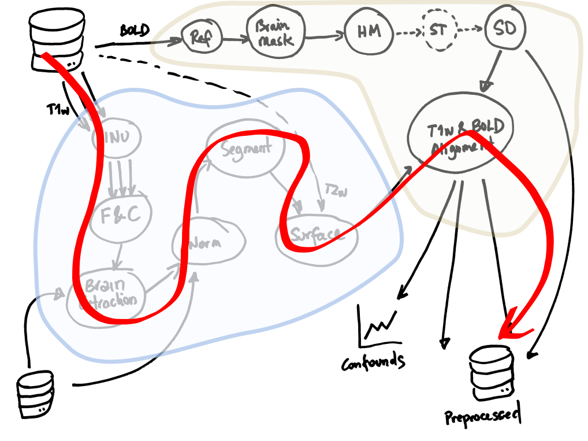
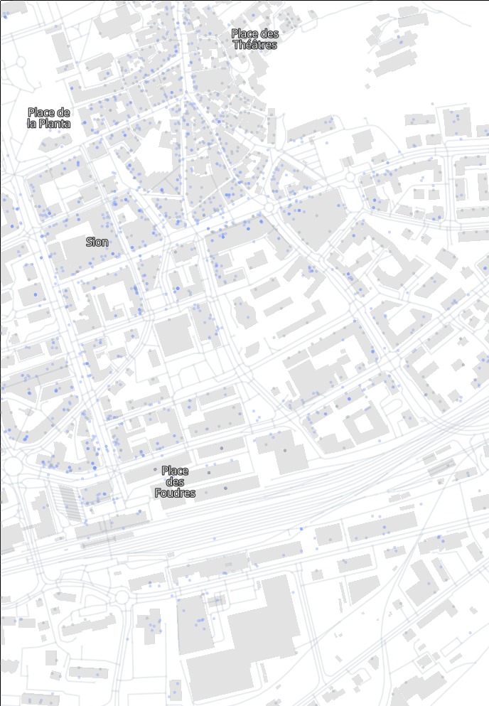
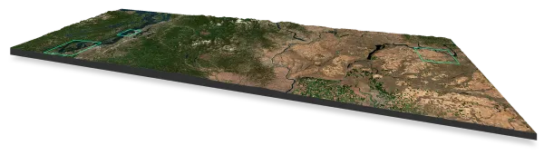

name: title layout: true class: cover --- count: false .section-mark.center[ <a href="https://oesteban.github.io/isc-302-2026-2027-slides/week1/day1/index.html"> <object type="image/svg+xml" data="images/qr-talk-url.svg" style="width: 20%"></object> <br /> https://oesteban.github.io/isc-302-2026-2027-slides/week1/day1/index.html </a> <br /> <br /> ## Introduction to data pipelines Oscar Esteban <<code>oscar.esteban@hevs.ch</code>> <br /> ### 302 Data infrastructures (week 1, day 1) — 14.09.2026 ] ??? --- name: newsection layout: true .perma-sidebar[ <p class="rotate"> <a rel="license" href="http://creativecommons.org/licenses/by/4.0/"><img alt="Creative Commons License" style="border-width:0; height: 20px; padding-top: 6px;" src="https://i.creativecommons.org/l/by/4.0/88x31.png" /></a> <span style="padding-left: 10px; font-weight: 600;">Introduction to data pipelines (14.09.2026)</span> </p> ] --- class: vcenter # Objectives .cards.goals[ .card[ .marker[<i class="fa-solid fa-circle-right"></i>] Explain what a **data transformation** is .gray-text[and name one from your own field] ] .card[ .marker[<i class="fa-solid fa-circle-right"></i>] Recognize how **tasks depend on one another** .gray-text[and why a pipeline has no feedback loops] ] .card[ .marker[<i class="fa-solid fa-circle-right"></i>] Apply **DAGs** to represent a pipeline .gray-text[nesting and flattening the same computation] ] .card[ .marker[<i class="fa-solid fa-circle-right"></i>] Bound the **speed-up** you can expect .gray-text[latency, throughput, the critical path, Amdahl's law] ] .card[ .marker[<i class="fa-solid fa-circle-right"></i>] Choose **ETL or ELT**, and say where the data lands .gray-text[warehouse, mart or lake, and what a table format adds] ] .card[ .marker[<i class="fa-solid fa-circle-right"></i>] Run a pipeline **in a container** .gray-text[a working Docker environment on your laptop] ] ] --- # Schedule .boxed-content.program-table[ | Time | Content | |:--:|:--| | 9h40 | Explaining a pipeline (**intro**). | | 9h50 | .gray-text[Break] | | 10h10 | **Roulette**: Explaining a pipeline (game). | | 10h40 | **Lecture**: Introduction to data pipelines. | | 11h15 | **µLab**: Docker primer | | 11h45 | .gray-text[Lunch break] | | | | | 12h45 | **"Changing hats"**: topic draw | | 13h40 | **µLab**: brain pipeline | | 15h20 | **Quiz** & Individual time | | 16h10 | .gray-text[End] | ] --- .section-mark[ # Quick quiz .large[ISC Learn opens and closes it.] ] --- .section-mark[ # Data pipelines .large[Deep dive into one real processing pipeline] ] --- # Roulette game: explaining this pipeline .boxed-content.center[ <object type="image/svg+xml" data="day1-workflow-nolabels.svg" style="width: 70%; padding-top: 10pt;"></object> ] ??? Let's begin with a little game. We will play another roulette, and a name will be called up for 90 seconds to explain one step in this figure. You can explain any of the pictures in this flowchart, so long it hasn't been picked already by another classmate. You don't have to be right, just explain one step. You can invent a sci-fi story if you wish, the only problem is that your fantasy may make it a little more difficult for those who come after you and have to explain downstream steps. Because you don't know when you're going to be called, it's nice that you try to say something sensible here. But remember, you're not required to, just try to help the team describe this data processing pipeline. Please look at it carefully, we will play the game after the break. --- .section-mark[ # Short break .large[We reconvene .timer[in 10 minutes].] ] --- class: roulette time: 75 .boxed-content.center[ <object type="image/svg+xml" data="day1-workflow-nolabels.svg" style="width: 85%; padding-top: 10pt;"></object> ] --- .boxed-content.center[ <object type="image/svg+xml" data="day1-workflow.svg" style="width: 85%; padding-top: 10pt;"></object> ] --- .section-mark[ # Transforming data .large[First steps into Big Data analysis] ] ??? We've just described a workflow together. Now, let's formalize what makes a workflow a pipeline, and how we represent and reason about it. --- # Pipelines: a specific type of workflows .boxed-content.center[ <object type="image/svg+xml" data="day1-workflow.svg" style="width: 55%; padding-top: 20pt;"></object> .pull-right[ <img alt="River system" src="https://upload.wikimedia.org/wikipedia/commons/thumb/7/75/Seine_drainage_basin.png/960px-Seine_drainage_basin.png?20080325210846" style="visibility: hidden; width: 90%; margin-top: 20px; padding: 4px; border: 1px solid #ccc; box-shadow: 2px 2px 6px rgba(0,0,0,0.3);" /> ] <br /> ] ??? Here's the full neuroimaging workflow we just reconstructed. This is one example of a domain-specific pipeline — but the concepts we'll learn today generalize far beyond neuroimaging. We identified tasks, inputs, outputs and dependencies. --- count: false # Pipelines: a specific type of workflows .boxed-content.center[ <object type="image/svg+xml" data="day1-workflow.svg" style="width: 55%; padding-top: 20pt;"></object> .pull-right[ .large[ ## Tasks ] ] <br /> ] ??? - Tasks are the boxes (e.g., "skull stripping", "spatial normalization") — they represent a transformation of data. --- count: false # Pipelines: a specific type of workflows .boxed-content.center[ <object type="image/svg+xml" data="day1-workflow.svg" style="width: 55%; padding-top: 20pt;"></object> .pull-right[ .large[ ## Tasks ## Inputs and outputs ] ] <br /> ] ??? - Inputs and outputs are the arrows (e.g., "T1w image", "brain mask") — they represent data at different stages of the workflow. --- count: false # Pipelines: a specific type of workflows .boxed-content.center[ <object type="image/svg+xml" data="day1-workflow.svg" style="width: 55%; padding-top: 20pt;"></object> .pull-right[ .large[ ## Tasks ## Inputs and outputs ## Dependencies ] ] <br /> ] ??? - Dependencies are the connections between tasks (e.g., "skull stripping" must be done before "spatial normalization") — they represent the order in which tasks must be executed. --- count: false # Pipelines: a specific type of workflows .boxed-content.center[ <object type="image/svg+xml" data="day1-workflow.svg" style="width: 55%; padding-top: 20pt;"></object> .pull-right[ <img alt="River system" src="https://upload.wikimedia.org/wikipedia/commons/thumb/7/75/Seine_drainage_basin.png/960px-Seine_drainage_basin.png?20080325210846" style="width: 90%; margin-top: 20px; padding: 4px; border: 1px solid #ccc; box-shadow: 2px 2px 6px rgba(0,0,0,0.3);" /> ] <br /> .large[Like a river system, pipelines have **no feedback loops**] ] ??? But there's one critical characteristic that makes pipelines different from general workflows: they have no feedback loops. They are like a river system: water flows from the source to the sea, but never back upstream. There can be many tributaries (inputs) and distributaries (outputs), but the flow is always downstream. --- # Why do we need pipelines? .boxed-content[ <object type="image/svg+xml" data="images/big-data-workflow-03.svg" style="width: 100%; padding-top: 20pt;"></object> ] ??? Let's step back and consider the most general data processing workflow. Overall, the data pipeline channels the flow of data from its initial capture to its final consumption. Data can very rarely be analyzed or applied as they are generated or collected. They need to be transformed before they can be used for analysis or decision. This is why they are usually preprocessed, which involves transformations involving filtering, cleaning, normalizing, aggregating, etc. Then, data are analyzed or "modeled", which can involve statistical analysis, machine learning,etc. Finally, the results of the analysis are interpreted, visualized, and used to make decisions or take actions --- # Why do we need pipelines? .boxed-content[ <object type="image/svg+xml" data="images/big-data-workflow-00.svg" style="width: 100%; padding-top: 20pt;"></object> ] ??? Data capture and ingestion can involve collecting data from various sources, such as sensors, databases, or user inputs. This data may be stored in a raw format. --- count: false # Why do we need pipelines? .boxed-content[ <object type="image/svg+xml" data="images/big-data-workflow-01.svg" style="width: 100%; padding-top: 20pt;"></object> ] ??? Because raw formats are often not suitable for analysis, data need to be transformed through a series of steps in preprocessing. For example, we may apply a smoothing filter to reduce noise in temperature time series, normalize values to a Kelvin scale or aggregate data from several thermometers. --- count: false # Why do we need pipelines? .boxed-content[ <object type="image/svg+xml" data="images/big-data-workflow-02.svg" style="width: 100%; padding-top: 20pt;"></object> ] ??? During modeling, we identify patterns, trends, or relationships in the data. We also prepare them for consumption or decision, e.g., by generating visualizations or summary statistics. --- count: false # Why do we need pipelines? .boxed-content[ <object type="image/svg+xml" data="images/big-data-workflow-03.svg" style="width: 100%; padding-top: 20pt;"></object> ] ??? Finally, the results of the analysis are interpreted, visualized, and used to make decisions or take actions. Following our example of temperature data, the system may decide to start a cooling fan if the temperature exceeds a certain threshold for a given period of time. --- # Use cases: medical data .boxed-content.center[ <object type="image/svg+xml" data="images/pipeline-examples-medical-0.svg" style="width: 95%; padding-top: 50pt;"></object> ] --- count: false # Use cases: medical data .boxed-content.center[ <object type="image/svg+xml" data="images/pipeline-examples-medical-1.svg" style="width: 95%; padding-top: 50pt;"></object> ] --- count: false # Use cases: medical data .boxed-content.center[ <object type="image/svg+xml" data="images/pipeline-examples-medical-2.svg" style="width: 95%; padding-top: 50pt;"></object> ] --- count: false # Use cases: medical data .boxed-content.center[ <object type="image/svg+xml" data="images/pipeline-examples-medical-3.svg" style="width: 95%; padding-top: 50pt;"></object> ] --- count: false # Use cases: medical data .boxed-content.center[ <object type="image/svg+xml" data="images/pipeline-examples-medical-4.svg" style="width: 95%; padding-top: 50pt;"></object> ] --- # Use cases: geospatial .boxed-content.center[ <object type="image/svg+xml" data="images/pipeline-examples-geo-0.svg" style="width: 95%; padding-top: 50pt;"></object> ] --- count: false # Use cases: geospatial .boxed-content.center[ <object type="image/svg+xml" data="images/pipeline-examples-geo-1.svg" style="width: 95%; padding-top: 50pt;"></object> ] --- count: false # Use cases: geospatial .boxed-content.center[ <object type="image/svg+xml" data="images/pipeline-examples-geo-2.svg" style="width: 95%; padding-top: 50pt;"></object> ] --- count: false # Use cases: geospatial .boxed-content.center[ <object type="image/svg+xml" data="images/pipeline-examples-geo-3.svg" style="width: 95%; padding-top: 50pt;"></object> ] --- count: false # Use cases: geospatial .boxed-content.center[ <object type="image/svg+xml" data="images/pipeline-examples-geo-4.svg" style="width: 95%; padding-top: 50pt;"></object> ] --- class: vcenter, stepwise # Use cases: weather .cards.cols-5[ .card.step-1[ .section-icon.centered[<i class="fa-solid fa-tower-broadcast"></i>] ### Collection Automatic stations, all over Switzerland. ] .card.step-2[ .section-icon.centered[<i class="fa-solid fa-cloud-arrow-down"></i>] ### Ingestion Published as open government data. ] .card.step-3[ .section-icon.centered[<i class="fa-solid fa-filter"></i>] ### Preprocessing Quality control, gaps, aggregation. ] .card.step-4[ .section-icon.centered[<i class="fa-solid fa-chart-line"></i>] ### Modeling Trends across years and altitudes. ] .card.step-5[ .section-icon.centered[<i class="fa-solid fa-chalkboard-user"></i>] ### Use Forecasts, climate reports, and your notebook on 12 Oct. ] ] ??? --- class: roulette time: 75 .boxed-content.center[ <object type="image/svg+xml" data="images/pipeline-examples-generic.svg" style="width: 95%; padding-top: 100pt;"></object> ] --- # Pipelines as DAGs .boxed-content.center[ .pull-right[ <p></p> ] .pull-left[ <object type="image/svg+xml" data="day1-workflow.svg" style="width: 100%; padding-top: 40pt;"></object> ] <br /> .large[We can represent pipelines as *Directed Acyclic Graphs* (DAGs)] ] ??? The cleanest way to represent pipelines is with Directed Acyclic Graphs. Tasks are nodes, dependencies are edges. DAGs make it explicit what can run in parallel and what must wait --- # Pipelines as DAGs: they can be arbitrarily nested ... .boxed-content.center[ .pull-right[ <p></p> ] .pull-left[ <object type="image/svg+xml" data="day1-workflow.svg" style="width: 100%; padding-top: 40pt;"></object> ] <br /> .large[But they remain **Acyclic**] ] ??? --- count: false # Pipelines as DAGs: they can be arbitrarily nested ... .boxed-content.center[ .pull-right[ <p></p> ] .pull-left[ <object type="image/svg+xml" data="day1-workflow.svg" style="width: 100%; padding-top: 40pt;"></object> ] <br /> .large[But they remain **Acyclic**] ] ??? --- # ... and flattened .boxed-content.center[ .pull-right[ <img alt="A DAG" src="https://fmriprep.org/en/stable/_images/api-9.png" style="width: 90%; margin-top: -60px; padding: 4px; border: 1px solid #ccc; box-shadow: 2px 2px 6px rgba(0,0,0,0.3);" /> ] .pull-left[ <p></p> .large[Example: subtasks in the alignment step] ] ] ??? --- # Task latency: time from start to finish .boxed-content.center[ <object type="image/svg+xml" data="images/pipeline-latency-medium.svg" style="width: 95%; padding-top: 100pt;"></object> ] ??? --- count: false # Task latency: time from start to finish .boxed-content.center[ <object type="image/svg+xml" data="images/pipeline-latency-large.svg" style="width: 95%; padding-top: 100pt;"></object> ] ??? --- count: false # Task latency: time from start to finish .boxed-content.center[ <object type="image/svg+xml" data="images/pipeline-latency-short.svg" style="width: 95%; padding-top: 100pt;"></object> ] ??? --- # Total latency (linear pipeline) .boxed-content.center[ <object type="image/svg+xml" data="images/pipeline-latency-total.svg" style="width: 95%; padding-top: 100pt;"></object> ] ??? --- count: false # Total latency (linear pipeline) .boxed-content.center[ <br /> .large[Q: How to increase **throughput**?] <object type="image/svg+xml" data="images/pipeline-latency-total.svg" style="width: 95%; padding-top: 18pt;"></object> ] ??? --- # Nonlinear pipeline (DAGs with parallel paths) .boxed-content.center[ ] ??? --- # Critical path .boxed-content.center[ <p></p> .large[the dependency chain with *longest total latency*] ] ??? Emphasize: speeding up a non-critical task often doesn't change the makespan. --- # Amdahl's law (upper bound on speedup) .pull-left[ <br /> .larger[Given a fixed workload, the latency speedup $S_\text{latency}$ relates to fraction of parallelizable work $p$ and parallelization factor $s$ as:] .large[ \\[ S_\text{latency} \le \frac{1}{1 - p + \frac{p}{s}} \\] ] .larger[When $s \to \infty$, then $S_\text{latency} \le \frac{1}{1 - p}$.] .gray-text[ If only 10% of the total latency is parallelizable ($p=0.1$), then $S_\text{latency} \le 1.11$, then with infinite resources we can only speed up the total latency by 11%. ] ] .pull-right.center[ <br /> <a href="https://commons.wikimedia.org/wiki/File:AmdahlsLaw.svg#/media/File:AmdahlsLaw.svg"> <img alt="River system" src="https://upload.wikimedia.org/wikipedia/commons/e/ea/AmdahlsLaw.svg" style="width: 90%; margin-top: 20px; padding: 4px; border: 1px solid #ccc; box-shadow: 2px 2px 6px rgba(0,0,0,0.3);" /> </a><br>By <a href="https://en.wikipedia.org/wiki/User:Daniels220" class="extiw" title="wikipedia:User:Daniels220">Daniels220</a> at <a href="https://en.wikipedia.org/wiki/Amdahl%27s_law" class="extiw" title="wikipedia:">Wikipedia</a>, <a href="https://creativecommons.org/licenses/by-sa/3.0" title="Creative Commons Attribution-Share Alike 3.0">CC BY-SA 3.0</a> ] ??? Use this to reason about “worth it?” before scaling out. --- .section-mark.large.no-bullet[ * .large[**ETL** = Extract → Transform → Load] <br /> .indent[.gray-text[Curate/clean **before** loading into the destination.]] <br /> <br /> * .large[**ELT** = Extract → Load → Transform] <br /> .indent[.gray-text[Load **raw** data first, then transform **in-place**.]] ] ??? --- class: vcenter, stepwise # ETL or ELT: .gray-text[many sensors, many sampling rates] .cards.cols-3.larger[ .card.step-1[ .section-icon.corner[<i class="fa-solid fa-filter"></i>] ### ETL Curate **before** you store. .foot[Data stored in tables at one fixed rate: fast channels anti-alias filtered then downsampled, slow ones padded with N/A, outliers rejected on the way in.] ] .card.step-3[ .section-icon.corner[<i class="fa-solid fa-shuffle"></i>] ### Hybrid Interpret on arrival, reshape **after**. .foot[Streams are stored with their original sampling rate in different tables with a pre-defined schema. Drops some metadata that is not necessary given the schema.] ] .card.step-2[ .section-icon.corner[<i class="fa-solid fa-database"></i>] ### ELT Land it raw, shape it **after**. .foot[Each stream preserved "untouched" in an object store as the device sends it, plus the metadata to interpret it.] ] ] .admonition.question.step-4[ .large[<i class="fa-solid fa-circle-question"></i> What would you choose for a **clinical MRI pipeline**?] ] ??? --- class: vcenter, stepwise # ETL or ELT: .gray-text[geospatial data] .cards.cols-3.larger[ .card.step-1[ .section-icon.corner[<i class="fa-solid fa-filter"></i>] ### ETL Curate **before** you store. .foot[Data of a specific area, reprojected on a 10 m grid.] ] .card.step-3[ .section-icon.corner[<i class="fa-solid fa-shuffle"></i>] ### Hybrid Interpret on arrival, reshape **after**. .foot[Data of a specific area, but the original resolution is preserved.] ] .card.step-2[ .section-icon.corner[<i class="fa-solid fa-database"></i>] ### ELT Land it raw, shape it **after**. .foot[Every tile in the projection and resolution it arrived in, with its footprint and its date.] ] ] .admonition.question.step-4[ .large[<i class="fa-solid fa-circle-question"></i> And for **card payments**, what would be the issue with an ELT approach?] ] ??? --- class: vcenter # ETL vs. ELT .gray-text[side by side] .plan-table.large[ <table> <thead> <tr><th style="width:22%">Aspect</th><th style="width:39%">ETL</th><th style="width:39%">ELT</th></tr> </thead> <tbody> <tr class="band"><td class="sec">Compute location</td><td>Outside the warehouse</td><td>Inside it</td></tr> <tr><td class="sec">Governance</td><td>Strong control on the way in</td><td>Enforced at query time</td></tr> <tr class="band"><td class="sec">Storage</td><td>Smaller, curated only</td><td>Large: raw and curated</td></tr> <tr><td class="sec">Latency</td><td>Often batch windows</td><td>Low, incremental models</td></tr> <tr class="band"><td class="sec">Cost</td><td>ETL infra + warehouse</td><td>Mostly the warehouse</td></tr> <tr><td class="sec">Flexibility</td><td>Fixed curated schema</td><td>High: schema-on-read</td></tr> </tbody> </table> ] ??? - ETL feels familiar to strict pipelines (neuroimaging with rigid file contracts). - ELT is popular where warehouses scale elastically. --- class: vcenter # [Data] Warehouses, Marts & Lakes .cards.cols-2[ .card[ <p></p> ### ETL Stores in a *Data Warehouse* (DW), with a fixed schema. .foot[**Data mart**: a subject-area subset of a DW, scoped to one team, product or domain (e.g., finance mart, a clinical mart). ] ] .card[ <p></p> ### ELT Stores in a *Data Lake* (DL), with schema-on-read. .foot[**Data swamp**: a degraded DL due to lack of governance.] ] ] .admonition.warning[ <i class="fa-solid fa-triangle-exclamation"></i> Do not confuse a DL with **Delta Lake**: that is a *table format*, layered on a lake. ] ??? --- # DW, DM & DL .gray-text[(recap)] <br /> .boxed-content.no-bullet[ * .large[<i class="fa-solid fa-warehouse"></i></i> **Data warehouse** (DW)] <br /> .indent.larger[Curated, **structured** data optimized for analytics (columnar, SQL, governance).] <br /> * .large[<i class="fa-solid fa-store"></i></i> **Data mart**] <br /> .indent.larger[Subject-area subset of the warehouse (team/product-focused).] <br /> * .large[<i class="fa-solid fa-water"></i></i> **Data lake** (DL)] <br /> .indent.larger[Raw/semistructured data on object storage; **schema-on-read**; diverse formats.] ] ??? - Warehouse: BigQuery/Snowflake/Redshift curated tables. - Mart: Finance or Clinical mart from the central warehouse. - Lake: S3/ADLS/GCS with Parquet/JSON, images, binaries. --- # Standard ELT: a DL of Parquet files .cards.cols-3.vcenter[ .card[ ### Parquet A **columnar file format** for fast storage and retrieval of large datasets. Typically, folders logically structure parquet files, which keep arriving to the DL. .foot[The file format determines how the data is stored.] ] .card[ ### A *naive* structure If data is being added to the DL (e.g., new parquet files), a simultaneous query will run on a dirty state (some new files will be read, some ignored). .foot[The DL cannot be queried directly because how those many files create a table together is unknown.] ] .card[ ### "Meta-" table formats Creates a **snapshot** (e.g., with manifest files) that allows seeing a pool of Parquet files as an actual table with optimizations such as leveraging Parquet's columnar storage. .foot[**Iceberg**, Delta Lake, Hudi.] ] ] ??? Two more, if they ask: - Two jobs writing at once overwrite each other's files. - Renaming a column means rewriting every file, because the name lives in each footer. --- class: vcenter, stepwise # Types of data pipelines in terms of input timing .cards.cols-3.larger[ .card.step-1[ .section-icon.corner[<i class="fa-solid fa-box"></i>] .kicker[Latency: hours] ### Batch A dataset has clear starting and ending points, and can be processed in one go. .foot[For example, a CSV file with 12 days of data from sensors sampling at 1 KHz (∼1 million rows).] ] .card.step-3[ .section-icon.corner[<i class="fa-solid fa-stopwatch"></i>] .kicker[Latency: minutes] ### Micro-batch The input is unbounded, but it is cut into small bounded chunks of a few seconds. .foot[For example, the same sensor readings, grouped into 1-day chunks (∼90,000 rows).] ] .card.step-2[ .section-icon.corner[<i class="fa-solid fa-infinity"></i>] .kicker[Latency: seconds] ### Streaming The input is unbounded because the dataset is continuously growing. .foot[For example, real-time trading data, or a sensor that keeps sending readings.] ] ] ??? Micro-batch is the compromise: batch machinery, seconds of latency instead of milliseconds. It is how Spark Structured Streaming reuses the batch engine. --- # Handling streams .gray-text[(e.g., Apache Kafka)] .cards.cols-2.vcenter[ .card[ ### A queue Deletes a message once it is consumed. One reader gets it, and a restart loses what was in flight. ] .card[ ### A log **Appends and retains.** Every reader keeps its own offset, so any number of them read all of it, and can read it again. ] .card.wide.accent[ That one difference is why a broker sits between producers and consumers, instead of a queue you wrote yourself. .foot[Topic 6, drawn this afternoon.] ] ] ??? --- .section-mark[ # Short break .large[We reconvene .timer[in 10 minutes].] ] --- .section-mark[ # <i class="fa-brands fa-docker large"></i> # µLab .large[Docker primer] .gray-text[Driver, mapper, referee. The first round of the way we work all block.] ] --- # What's Docker? .boxed-content.larger[ > Docker is a set of [platform as a service](https://en.wikipedia.org/wiki/Platform_as_a_service) (PaaS) products that use [OS-level virtualization](https://en.wikipedia.org/wiki/OS-level_virtualization) to deliver software in packages called [containers](https://en.wikipedia.org/wiki/Container_%28virtualization%29). > <br /> > <br /> > (...) > <br /> > <br /> > Docker is a tool that is used to automate the **deployment** of **applications** in lightweight **containers** so that applications can work efficiently in different environments in isolation. .align-right[ [Wikipedia](https://en.wikipedia.org/wiki/Docker_%28software%29) ] ] ??? --- class: group-roulette groups: 4 seed: 14.09.2026 # The first µLab of the section .cards.goals[ .card[ .marker[<i class="fa-solid fa-list-ol"></i>] Top of your list **drives**. Next one **maps**. The rest of you **referee**. ] ] ??? --- # **µLab**: Docker primer .cards.goals[ .card[ .marker[<i class="fa-brands fa-docker"></i>] Get Docker onto the driver's laptop .gray-text[Install it if it is not there. Links on the next slide.] ] .card[ .marker[<i class="fa-solid fa-cloud-arrow-down"></i>] Start the download you need after lunch .gray-text[`docker pull oesteban/neuropipeline-302` is big. Start it now, and put the layers it prints on your sheet.] ] .card[ .marker[<i class="fa-solid fa-pen-ruler"></i>] While it downloads, **draw the two stacks** .gray-text[Containers and VMs side by side, on your sheet. What does the container *not* have?] ] .card[ .marker[<i class="fa-solid fa-circle-check"></i>] Then check it all worked .gray-text[`docker info`, then `docker run oesteban/whalesay 'hi 302!'`] ] ] .admonition[ <i class="fa-solid fa-flag-checkered"></i> Done when the sheet is filled in, the two stacks are drawn, and `docker images` lists **both**. ] ??? --- # Installing Docker <br /> .boxed-content.large.no-bullet[ * <i class="fa-brands fa-linux"></i> .larger[**Linux Users**] <br /> .indent[.gray-text[Install the **Docker Engine** ([instructions](https://docs.docker.com/engine/install/) for <i class="fa-brands fa-ubuntu"></i> <i class="fa-brands fa-suse"></i> <i class="fa-brands fa-redhat"></i> <i class="fa-brands fa-fedora"></i> <i class="fa-brands fa-centos"></i> <i class="fa-brands fa-raspberry-pi"></i>).]] <br /> * <i class="fa-brands fa-windows"></i> <i class="fa-brands fa-apple"></i> .larger[**Windows and Mac Users**] <br /> .indent[.gray-text[Install the **Docker Desktop** ([instructions](https://docs.docker.com/desktop/)).]] ] --- .section-mark[ # Lunch break .large[We reconvene in <span class="timer">1 hour</span>.] ] --- .section-mark[ # "Changing hats" .large[Choosing the topic you will teach] ] ??? --- class: vcenter # How the draw works .cards.steps[ .card.step-1[ .enum[1] .large[I walk you through **all sixteen topics**] .gray-text[(one slide each, about a minute)] .section-icon.corner[<i class="fa-solid fa-list-ol"></i>] ] .card.step-2[ .enum[2] .large[You **read the briefs** and write your own shortlist] .gray-text[(quietly, on paper)] .section-icon.corner[<i class="fa-solid fa-book-open"></i>] ] .card.step-3[ .enum[3] .large[The **printouts go on the table**] .gray-text[(one copy of each topic)] .section-icon.corner[<i class="fa-solid fa-table-list"></i>] ] .card.step-4[ .enum[4] .large[The roulette **calls you in**, you take one] .gray-text[(random order, and it is first come first served)] .section-icon.corner[<i class="fa-solid fa-ticket"></i>] ] .card.step-5[ .enum[5] .large[**Ten minutes to trade**] .gray-text[(with anyone, for any reason)] .section-icon.corner[<i class="fa-solid fa-right-left"></i>] ] ] ??? --- # .gray-text[1] Containers vs. VMs .cards.cols-1.vcenter[ .card[ .kicker[the question you answer] .large[Containers and VMs both isolate execution. How do you choose between them?] ] .card.muted[ .kicker[what your demo has to show] Run the same small job in a Docker container and in a virtual machine. Report three numbers: cold start time, memory at rest, and disk footprint. ] ] ??? --- # .gray-text[2] Building containers (with Docker) .cards.cols-1.vcenter[ .card[ .kicker[the question you answer] .large[When an image is too large or takes long to rebuild; how do you refactor the Dockerfile?] ] .card.muted[ .kicker[what your demo has to show] Demonstrate how Dockerfiles are built, caching of layers, the order of instructions, tags, digests, and multi-stage builds. Show how to reduce image size and improve build times by reordering instructions and using multi-stage builds. ] ] ??? --- # .gray-text[3] Automating image building with CI/CD .cards.cols-1.vcenter[ .card[ .kicker[the question you answer] .large[How do you save time, and make the process repeatable, when building images and uploading them for distribution?] ] .card.muted[ .kicker[what your demo has to show] A repository whose workflow builds and publishes the image on every push. Show a commit triggering it, the image appearing in the registry, and a second commit that reuses the cache. ] ] ??? --- # .gray-text[4] From Docker Compose to Kubernetes .cards.cols-1.vcenter[ .card[ .kicker[the question you answer] .large[Compose already runs several containers that find each other. So what does Kubernetes add?] ] .card.muted[ .kicker[what your demo has to show] Start from a two-service Compose file and show the containers reaching each other by name. Then run the same two services on a local Kubernetes and show what replaced the Compose network — and what you had to write that Compose gave you for free. ] ] ??? --- # .gray-text[5] K8s, MicroK8s, K3s, minikube: container orchestration .cards.cols-1.vcenter[ .card[ .kicker[the question you answer] .large[Four things call themselves Kubernetes. What is actually different, and which one is on your laptop?] ] .card.muted[ .kicker[what your demo has to show] Bring the same Deployment up on at least two of them. Show what differs where it is visible: install time, what is running on the node, what is missing, and what happens when you kill a pod. ] ] ??? --- # .gray-text[6] Data streams with Kafka .cards.cols-1.vcenter[ .card[ .kicker[the question you answer] .large[How do you handle data that is governed by events (as opposed to regular sampling)?] ] .card.muted[ .kicker[what your demo has to show] Run a single-broker Kafka from a compose file. Produce a handful of messages to a topic, kill the broker, bring it back, and consume from offset 0 to show nothing was lost. Then attach a second consumer in its own group and show it reads the messages the first one has already read. ] ] ??? --- # .gray-text[7] Packaging Kubernetes apps with Helm .cards.cols-1.vcenter[ .card[ .kicker[the question you answer] .large[How do you ship the same application to a test cluster and a production cluster without maintaining two copies of its manifests?] ] .card.muted[ .kicker[what your demo has to show] Install a public chart in one command and watch a working application come up. Then take that same chart with two different values files and show two genuinely different deployments coming out of one package. ] ] ??? --- # .gray-text[8] Container security: what isolation does not give you .cards.cols-1.vcenter[ .card[ .kicker[the question you answer] .large[Your container runs as root. What can it reach on the host, and what stops it?] ] .card.muted[ .kicker[what your demo has to show] Bind-mount a host directory into a container, write a file from inside as root, and show it on the host owned by root. Then run the same image as a non-root user with capabilities dropped, and show the write fail. Keep it to what you can demonstrate on your own laptop. ] ] ??? --- # .gray-text[9] Caching and typed interfaces in Flyte .cards.cols-1.vcenter[ .card[ .kicker[the question you answer] .large[You changed one task and re-ran the workflow. What has to run again, and who decides?] ] .card.muted[ .kicker[what your demo has to show] Run a Flyte workflow. Run it again unchanged and show the cache hits. Change one task's input and show exactly what re-runs and what does not. Then break a type on purpose and show the failure arrive before anything executes. ] ] ??? --- # .gray-text[10] Retries and idempotence: what happens after a task fails .cards.cols-1.vcenter[ .card[ .kicker[the question you answer] .large[How to use retry to build more dependable pipelines? When are tasks really retriable?] ] .card.muted[ .kicker[what your demo has to show] A Flyte task that fails at random. Add a retry policy and show it recover. Then make it non-idempotent, appending to a file, and show the retry produce a quietly wrong answer. Fix it, and show the difference in the logs. ] ] ??? --- # .gray-text[11] Slurm and Kubernetes, two ways to schedule work .cards.cols-1.vcenter[ .card[ .kicker[the question you answer] .large[Your job will run on a machine that is not yours. What does Slurm need to know before it starts, and what does Kubernetes want instead?] ] .card.muted[ .kicker[what your demo has to show] Submit the same small job twice, once as a Slurm batch script and once as a Kubernetes Job. Show what each makes you declare up front, how each queues you, and what you get back when it is done. ] ] ??? --- # .gray-text[12] Inside a Parquet file .cards.cols-1.vcenter[ .card[ .kicker[the question you answer] .large[Why is the same data both smaller and faster to query as Parquet than as CSV?] ] .card.muted[ .kicker[what your demo has to show] Write one dataset as CSV and as Parquet, and compare size. Then read a single column from each and compare time and bytes actually read. Finish by showing the row-group and column-chunk structure of the file itself. ] ] ??? --- # .gray-text[13] Partitioning and the small-files problem .cards.cols-1.vcenter[ .card[ .kicker[the question you answer] .large[You partitioned the dataset by day and the same query got slower. Where did the time go?] ] .card.muted[ .kicker[what your demo has to show] Take the MeteoSuisse measurements and write them twice, once with a directory per day and once with a directory per year. Run a single-day query against both, then a query spanning three years against both. Report the read time and the number of files opened in each of the four cases. ] ] ??? --- # .gray-text[14] Table formats and the lakehouse .cards.cols-1.vcenter[ .card[ .kicker[the question you answer] .large[A lake is a directory of files. What does it take to call it a table?] ] .card.muted[ .kicker[what your demo has to show] Write Parquet, then append to it while a reader is running, and show what the reader sees. Do the same through an Iceberg table and show the reader get a consistent snapshot. Finish by changing the schema and showing old readers survive it. ] ] ??? --- # .gray-text[15] Object stores versus file systems .cards.cols-1.vcenter[ .card[ .kicker[the question you answer] .large[What is the difference between a filesystem and an object store?] ] .card.muted[ .kicker[what your demo has to show] Run the same operations against a local object store and against a filesystem path. Rename a directory, list a prefix with many keys, read the middle of a large file. Report which operations are cheap on each and which are quietly expensive. MinIO is enough for this. Its community edition was archived in April 2026, so existing builds still run but get no further releases, and new users are pointed at AIStor Free, which is free and single-node. Both speak the same S3 API, so either one works here. ] ] ??? --- # .gray-text[16] DataFrames with pandas, Polars and Arrow .cards.cols-1.vcenter[ .card[ .kicker[the question you answer] .large[pandas and Polars both give you a DataFrame. What is Arrow then?] ] .card.muted[ .kicker[what your demo has to show] The same small transformation in pandas and in Polars. Show the eager versus lazy difference, with one honest measurement. Then show the two handing data to each other through Arrow without copying it. ] ] ??? --- .section-mark[ # Read them properly .large[Every brief is in your hands.] .large[Write your own shortlist: .timer[12 minutes].] ] ??? --- class: roulette time: 20 <br /> <br /> .boxed-content.large[ One copy of each brief is on the table. When your name comes up, walk over and take the one you want. ] ??? --- .section-mark[ # Trade .large[Swap with anyone, for any reason.] .large[.timer[10 minutes] left.] ] ??? --- .section-mark[ # µLab .large[A first processing pipeline for brain extraction and segmentation from anatomical MRI] .gray-text[One round today: a dry run of the way we will work from Friday on.] ] --- # Steps .boxed-content.no-bullet[ * .large[<i class="fa-solid fa-circle-right"></i> We will use a prepared Docker image with all dependencies installed.] * .large[<i class="fa-solid fa-circle-right"></i> We *pulled* the image before:] .indent.large[ ``` Python docker run --rm -it -p 8888:8888 oesteban/neuropipeline-302 ``` * `oesteban/neuropipeline-302` is the image name * `--rm` removes the container after exiting * `-it` interactive terminal * `-p 8888:8888` maps port 8888 in the container to port 8888 on the host ] * .large[<i class="fa-solid fa-circle-right"></i> Once the container is spun up, the output will show a URL to access the Jupyter notebook server.] ] ??? --- .section-mark[ # Quick quiz (repeat) .large[Opens **15h20**, closes **15h50**.] .large[.gray-text[ISC Learn opens and closes it.]] ] --- .section-mark[ # End .large[ See you next time: 18.09.2026 @ 8h15 (in <span class="timer" data-until="2026-09-18T08:15:00+02:00"></span>) <i class="fa-solid fa-circle-left" style="opacity: 20%"></i> [<i class="fa-solid fa-home"></i>](#1) [<i class="fa-solid fa-circle-right"></i>](../../week1/day2/index.html) ] ]